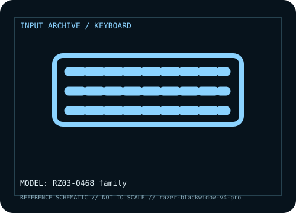

[ KEYBOARDS AND INTEGRATED POINTING DEVICES // IDENTIFIED COMPONENT ]
Razer BlackWidow V4 Pro
Full-size mechanical keyboard with Command Dial, dedicated macro keys, and per-key RGB.

MODEL IDENTIFICATION: Manufacturer model / identifier: RZ03-0468 family. Compare the unit label, regional suffix, and revision against manufacturer documentation before repair or compatibility claims.
Model specifications
| Catalog subcategory | Keyboards and integrated pointing devices |
|---|---|
| Exact model / ID | RZ03-0468 family |
| Model-specific features | Multi-zone lighting; mechanical switch variants; programmable dial and macros; profiles depend on firmware/software. |
| Interface and host support | Wired USB HID; Razer Synapse enables advanced lighting, macros, and remapping. |
| Revision / driver caveat | RZ03 suffix and switch type vary by region; distinguish V4 Pro from V4 X and verify the label. |
Preservation and service notes
Retain wrist rest and cable; document macros; clean key wells dry and avoid liquid near dial/lighting.
Record the as-found label, accessories, host OS, driver or firmware version, and test method. Separate observed condition from published specifications; family-level claims are not proof of an individual unit's revision.
Manufacturer source
- Razer BlackWidow V4 Pro — manufacturer model pageModel-specific manufacturer reference for identifying specifications, regional SKU, and linked current support documentation.
Manufacturer pages can change or retire. Preserve the applicable manual and note its revision when documenting a physical device.